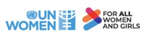
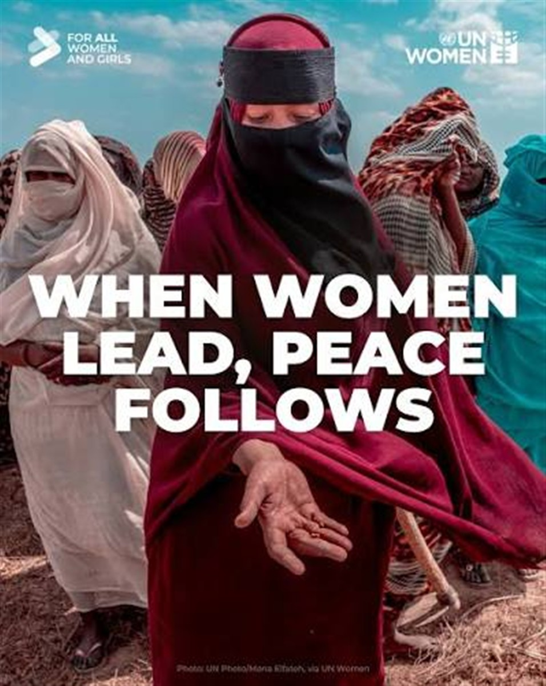

UN Under-Secretary-General and UN Women Executive Director Sima Bahous delivers remarks to the Security Council open debate on women and peace and security, UN headquarters, 17 June 2026. Photo: UN Women/Ryan Brown.
UN Under-Secretary-General and UN Women Executive Director Sima Bahous delivers remarks to the Security Council open debate on women and peace and security, UN headquarters, 17 June 2026. Photo: UN Women/Ryan Brown.

ON SOURCE: UN WOMEN - FOR ALL WOMEN AND GIRLS
Speech: Women, the largest and most reliable constituency for peace, ready to participate
Speech delivered by UN Women Executive Director Sima Bahous to the Security Council open debate on Women, Peace and Security, at the UN Headquarters, on 17 June 2026.
[As delivered.]
I thank Colombia for holding this session and for the invitation to address this Council this morning. I also thank Her Excellency Foreign Minister Rosa Yolanda Villavicencio for her leadership and her presence here with us today.
In a world that is evermore impacted by crisis, the need for solutions, for pathways to peace, has never been more urgent. Yet we continue to overlook one of the most proven.
Gender equality and women’s empowerment is among the most powerful approaches to achieving peace. This is neither speculation nor ideology. It is empirically robust, tested time and again, each time reaffirming its value in addressing crisis and conflicts.
It has been over two decades since the Women, Peace and Security Agenda was adopted in this Council, through Security Council resolution 1325. We have done countless studies since then, and we have heard, firsthand, in this Council and elsewhere, of the lessons learned:
-
When women are safe, nations are more peaceful.
-
Attitudes towards women and gender equality best predict political violence, extremism, and terrorism.
-
Where women are excluded from public life and employment, the risk of conflict rises.
-
Strong women’s movements reduce violence before, during, and after conflict.
-
Women in security and peacekeeping improve performance and accountability.
-
Rolling back women’s rights is an early warning of conflict and authoritarianism.
-
And peace is more likely to be reached faster—and to last longer—when women are at the table.
We know all this. That is why, when we pursue peace without women’s voices—without women at the table, leading alongside men, our efforts become compromised, they become fragile, and ultimately not serious.
We face today the highest number of conflicts since the United Nations’ founding, across every region, from Afghanistan, to Haiti, to Myanmar, to Lebanon, to Palestine, Sudan, Ukraine, and beyond—unprecedented in number and scale of humanitarian and geopolitical impact. A full quarter of humanity today live lives of terror, uncertainty, and insecurity.
These are conflicts women neither choose nor lead. Yet for which they pay the highest price while excluded from diplomatic efforts to end them.
This is true of the conflict in Sudan, the world’s largest humanitarian crisis, one where the atrocities committed against women and girls shame humanity. And yet across myriad diplomatic initiatives not one Sudanese woman has taken part in actual negotiations.
True also in Ukraine, where the war grows ever deadlier for women and girls, and only men feature in all rounds of peace talks. We see the same trend in the fragile ceasefires in Lebanon, in Palestine, the Democratic Republic of the Congo, and more.
All this as our new mediation landscape sidelines the United Nations, making women’s exclusion worse. The United Nations had achieved between 16 and 23 per cent women’s participation in UN-led processes in the past five years. Too low, yes, but still double the global average when all mediation processes are counted.
And the UN had placed women in positions of chief mediator, including in all the processes it has led last year, and nearly half of mediation expertise deployed being women.
But this promise down the path to genuine gender equality in the pursuit of peace matters far less when the United Nations’ role is increasingly being sidelined, when this multilateral system is under immense pressure.
I remind us that the United Nations led a mere three peace processes last year. Fifteen years ago, it had led 14 peace processes.
Women are disappearing from peace and mediation processes. I am sure this is something we will all come to regret.
There is an alternative. Less than two years ago, the Secretary-General launched a common pledge on women’s participation in peace processes. Forty-three Member States, regional organizations, and mediation actors have joined, including some of you here today. Many are mediating the peace processes I mentioned above.
I call on others to join. And I call on all those who have joined to endorse the target of a minimum one third of women’s representation advocated by the Secretary-General, and the CEDAW parity goal of General Recommendation 40. And to routinely report including here at the Security Council and the WPS meetings on the gender composition of talks they broker or they support, the measures taken for women’s direct inclusion, and the barriers faced in going beyond tokenistic inclusion and meetings on the margins.
Acting on those opportunities would make a difference in high-level diplomacy in our current mediation landscape. But equally important is to strengthen our support to women-led mediation at the community level.
In Sudan, UN Women surveyed 85 women-led organizations lately. Nearly half were involved in community mediation, countering hate speech, de-escalating tensions among different displaced populations and host communities, convincing local youth to disarm.
In Afghanistan, under the worst conditions for women and girls globally, we have found ways to work with more than 200 women’s organizations, including women human rights defenders, community leaders, journalists, and more, who are still advocating for their rights. They negotiate with the local authorities and deliver psychosocial support and essential aid to the most marginalized and vulnerable women and girls.
In Lebanon, we found that 80 per cent of women peacebuilders are contributing to the response to the recent escalation without any funding.
What is true in Afghanistan, in Lebanon, in Sudan, and beyond is true for every country on the agenda of this Council. Imagine what more these women and their organizations could achieve with the support they need and deserve.
Both despite and because of these challenges, we remain by your side as partners, from your high-level diplomacy to support of community-level mediation.
The role UN Women was able to play in the negotiations for the Havana Peace Agreement is high among our achievements, and we are proud of it. That agreement ended 52 years of conflict, and UN Women’s recognition in the peace agreement itself gives us fresh impetus as we continue to make our contribution to peace and security. We look forward to continuing to support Colombia on the path to an ever more peaceful and prosperous future.
And we know that where countries have prioritized gender equality, they have better emerged from conflict, better prevented relapse, better served their nations and peoples, spared them war, and made possible the enjoyment of peace. I look forward today to hearing more of the lessons learned, more of those experiences, and more examples that inspire us all.
Women are the largest and most reliable constituency for peace, and we are failing not only them, but everyone through their exclusion from decision-making at a time where we need them most. We are undermining peace today, sabotaging peace tomorrow. We can and must choose differently.
This imperative seems ever more urgent, and the costs of inaction ever greater—costs measured in failed agreements, in broken ceasefires, and transitions that have not delivered.
Women are ready. They have waited more than long enough.
Thank you.
ON SOURCE: UN WOMEN - FOR ALL WOMEN AND GIRLS
FURTHER READING: UN MEETINGS AND PRESS RELEASES
